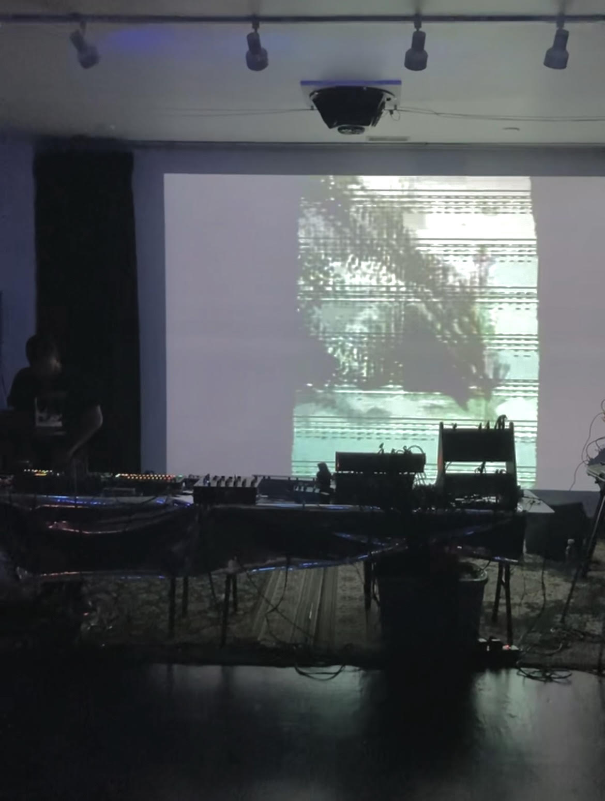
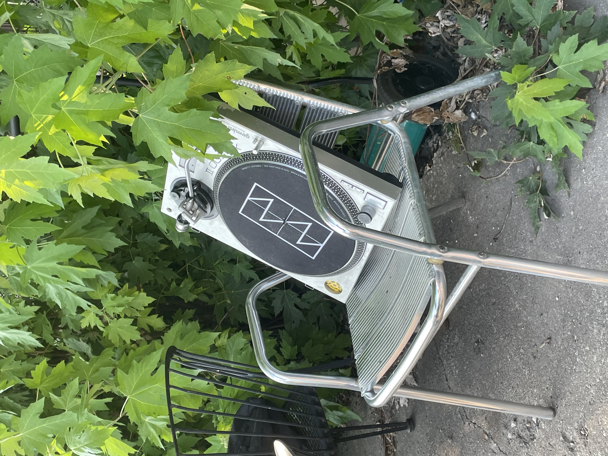
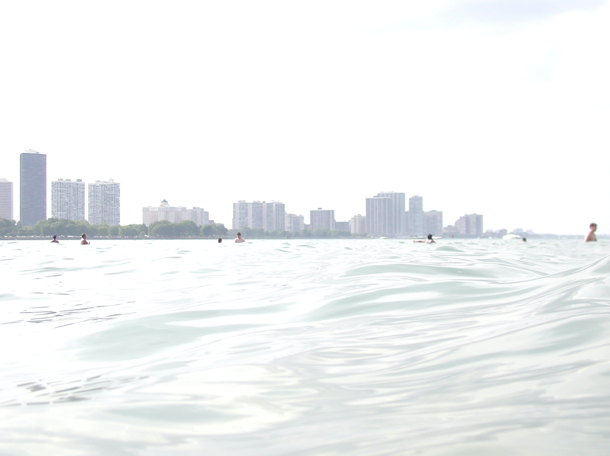
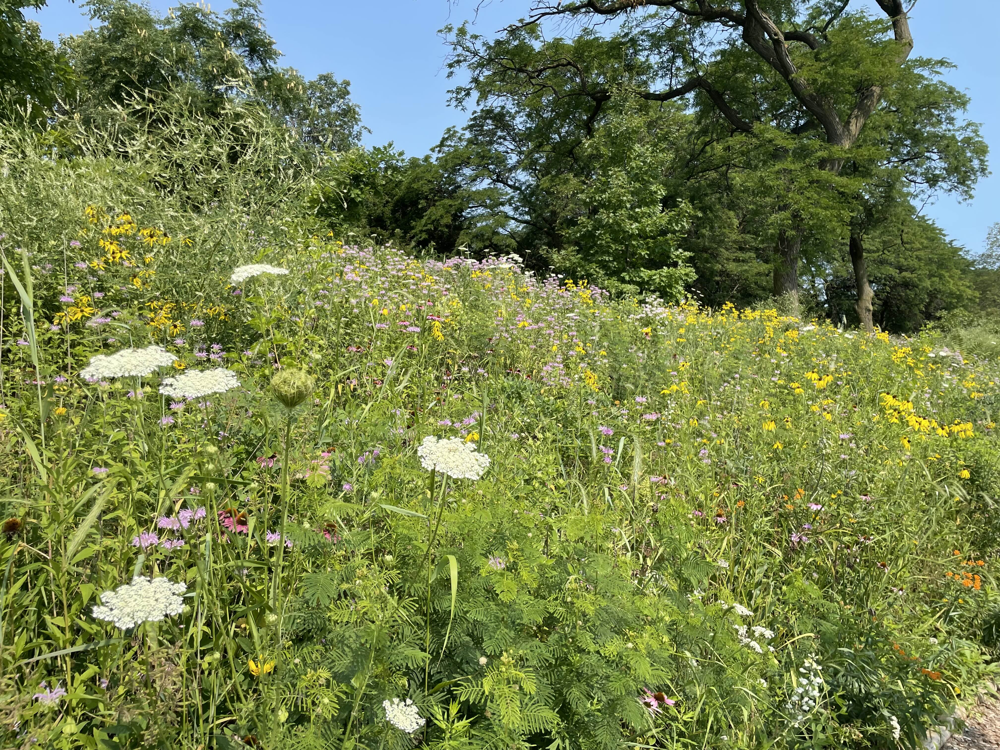
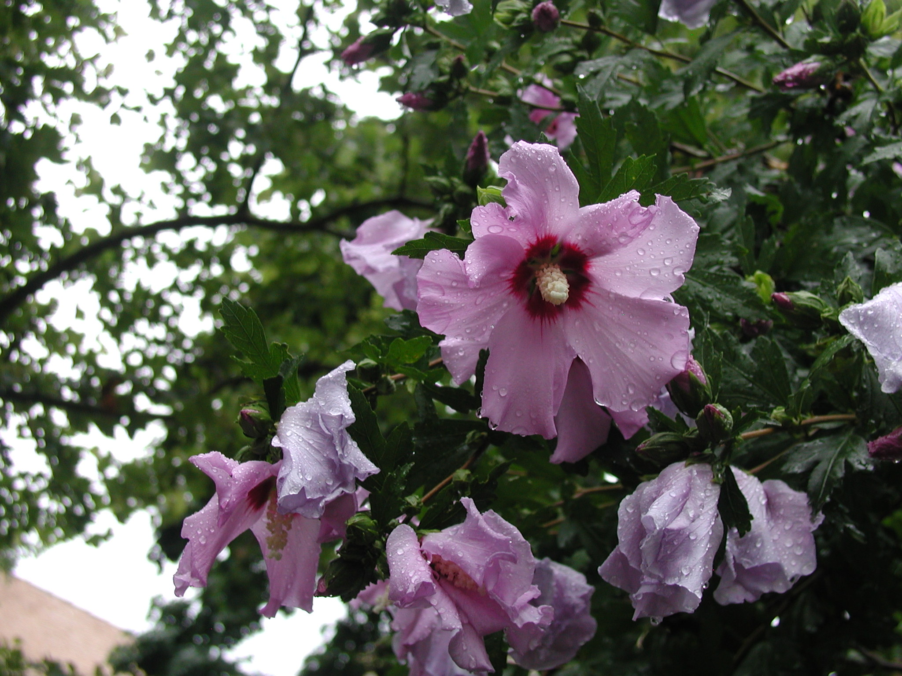
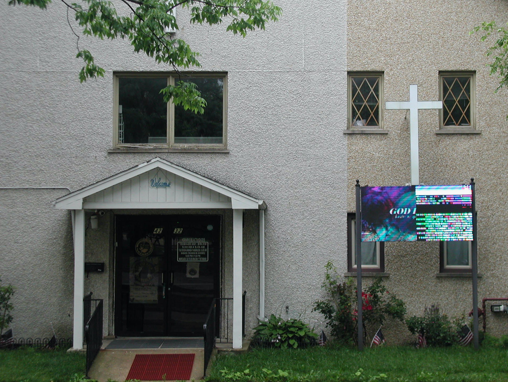
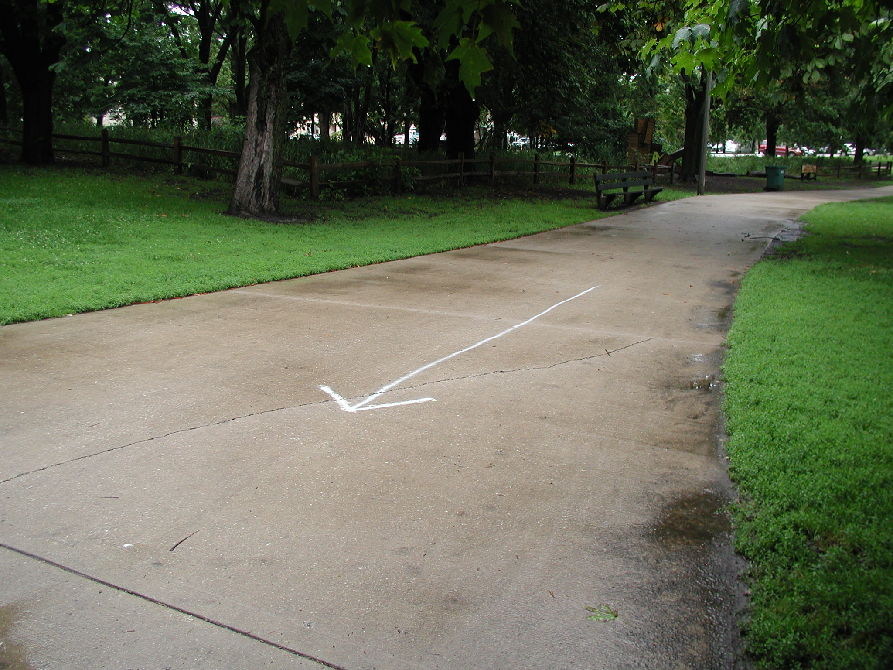
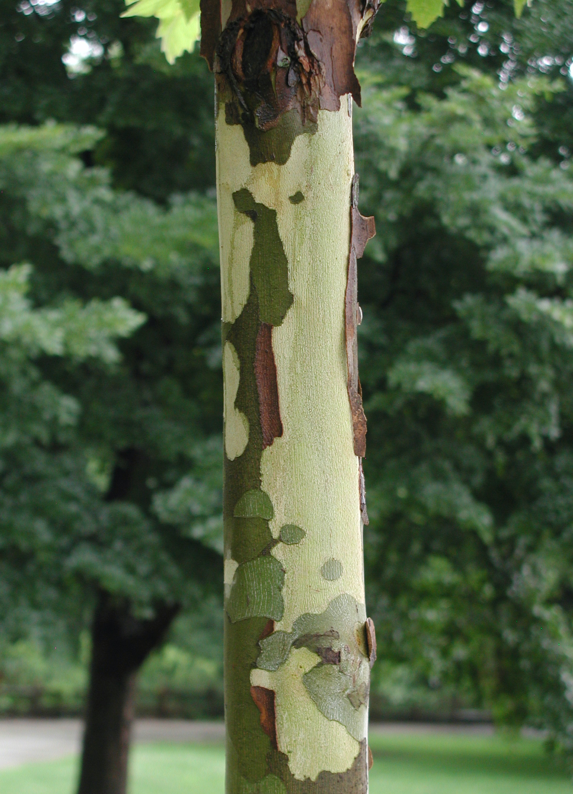

D. Strange @ Heavensware VIII (ty Nicolette)
D. Strange took up residence in a modest corner of the Heavensware synth table, which sprawled and flickered like a Blade Runner miniature. Out of the hum, he slowly raised a chordal sequence and held it for a time, inviting us to a familiar Techno soundscape. Then, the pastiche was pierced by a fully-baked drum pattern and we started dancing.
D. Strange's set mirrored his minimal rig (a Digitakt, a TR-8, a mixer)-- I don't think he used more than 5 samples at a time. Despite this, he effortlessly rendered a towering atmosphere of dark chords and carefully constructed patterns. His somewhat conventional samples + sound design allowed space for truly masterful explorations of Techno/Electro phrasing. He would extend, shrink, or otherwise reconfigure typical 4/8-bar phrases, i.e. a kick pattern would follow more of a 5-6 bar phrasing underneath 4/8 material. Because Techno is primarily rhythmic, this roughly translates to a dance-fugue: rhythm moves the body which moves the mind which moves us to the mystic plane.
As I pedaled home in the orange-green midnight, I thought about D. Strange's understated approach to the set. Maybe it had to do with the (lack of) attendance or he just needed the cash. At the end of the day, I don't think it matters-- nor do I think that's true. IMO, going out to see this tenured Tresor artist is similar to attending a Wednesday night Rachmaninoff concerto in 1920-- especially for the heads. Only the 'live electronic set' is criminally undervalued in music discourse. At best, it blurs the lines of composition, improvisation, and curation. Regardless, I wonder if he considers this sort of show as a laboratory for his live set, or if he's phoning it in... I did notice some hard mute/unmutes and even a few factory Digitakt samples, but it's not like I wasn't digging it.
Far from it, I had an amazing, transportive experience. I felt like I was in Nihei's Blame! and it was great.
On that note, re: the visuals by Jace: I appreciated them because they only enhanced the vibe of D. Strange's set and didn't overpower or disagree with the music. On our way to the fxn, gang was talking about how there isn't really a shared language/expectation to discuss visuals beyond being "good" or "bad." I think this is sometimes good and sometimes bad. I'm grateful I was able to enjoy some of the best live Techno of my life to my fullest capacity, with all my senses.



me and patrick


Lush beds of native plant growth at Horner Park River Trail. The colors, smell, and bug hums washed over me.




last day of 24